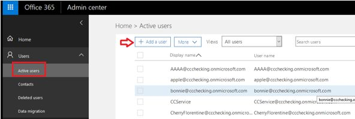

SaaS Backup for Office 365を使い始める GitHubで編集 ドキュメントの変更をリクエストする
貢献者
NetApp SaaS Backup for Office 365を使い始めるには、データのバックアップに使用するストレージの種類の決定、関連情報の収集、MS Office 365サービスアカウントの作成、ユーザー権限の割り当てなど、さまざまな手順があります。
データのバックアップに使用する記憶域の種類を決定する
Office 365コントロール用NetApp SaaSバックアップは、バックアップのオプションとしてAmazon S3ストレージとAzure Blobストレージを提供します。 Office 365用SaaSバックアップを使用すると、データをバックアップするために自分のストレージを持ち込むこともできます（BYOS）。 SaaS Backupが提供するストレージを使用することを選択した場合は、サインアップする前に情報を収集する必要はありません。 BYOSオプションを選択した場合は、サインアップする前にストレージに関する適切な情報を収集する必要があります。
SaaS Backup for Office 365ストレージプラットフォームに関する情報を収集する
BYOS Amazon S3ストレージ、StorageGRID Webscaleオブジェクトストレージ、またはAzure Blobストレージをセットアップするには、次の情報が必要です。
Amazon S3
SaaS Backupが提供するAmazon S3バケットを使用している場合は、この情報を収集する必要はありません。独自のAmazon S3バケットを使用している場合は、以下の情報を収集する必要があります。バケット名
領域
アクセスキー
秘密鍵
StorageGRID Webスケール
SaaS BackupはStorageGRID Webスケールバケットを作成しません。すでに存在しているはずです。ホスト/ IPアドレス
証明書付きのパブリックIPアドレスとドメイン名が必要です（例：webscale.netapp.com）。また、Transport Layer Security（TLS）プロトコル1.2を使用している必要があります。港
開いているポートは、どちらが設定されていても、8082または443である必要があります。バケット名
アクセスキー
秘密鍵
Azure Blob
アカウント名
コンテナ名
アクセス・ポイント
アクセスキー
領域
グローバル管理者権限を持つ新しいMS Office 365サービスアカウントを作成する
SaaS Backup for Office 365にサインアップするときは、グローバル管理者権限を持つ新しいMicrosoft Office 365サービスアカウントを作成することをお勧めします。ただし、新しいアカウントを作成する必要はありません。ご希望の場合は、既存のMicrosoft Office 365サービスアカウントを使用できます。
管理者権限を持つアカウントを使用してOffice 365管理ポータルにログインします。
ユーザーをクリックします 。

[ アクティブユーザー ] を選択し、[ ユーザーの追加 ] をクリックします 。
新しいサービスアカウントの詳細を入力します。
ファーストネーム
苗字
表示名
ユーザー名
ユーザー名はサービスアカウントの名前です。

[ 役割]を展開し 、[ グローバル管理者 ] を役割として選択して、[ 追加 ] をクリックします。

サービスアカウントの詳細が管理者に送信されます。新しいアカウントを使用してOffice 365管理ポータルにログインし、アクティブにします。
サービスアカウントに、少なくともExchange OnlineとSharePoint Onlineのライセンスが含まれていることを確認してください。
グローバル管理者ロールの個々のライセンスを制限する場合、これは特に重要です。
MS Office 365サービスアカウントにユーザー権限を割り当てる
SaaS Backupにサインアップする前に、Microsoft Office 365サービスアカウントにユーザー権限を割り当てる必要があります。ユーザー権限を割り当てるプロセスは、SaaS Backupで使用しているMicrosoftサービス（Exchange Online、SharePoint Online、OneDrive for Business）によって異なります。
オンラインでMicrosoft Exchangeのユーザー権限を割り当てる
SaaS BackupをMicrosoft Exchange Onlineと共に使用する予定の場合は、偽装を構成する必要があります。偽装を使用すると、Microsoft Office 365サービスアカウントはユーザーアカウントを偽装し、関連付けられているアクセス許可にアクセスできます。
偽装を自動的に構成するには、 MSDN PowerShellコマンドを実行します。
偽装を手動で構成するには
Exchange管理センターまたは管理者アカウントを使用して、Microsoft Office 365サービスアカウントにログインします。
[ Exchange ]タブをクリックします。
左側のナビゲーションペインの[ダッシュボード]で、[ 権限]を選択します。
[ 管理者の役割]をクリックします 。
右側のペインをダブルクリックして、「 ディスカバリー管理」を選択します。
[ 役割 ]で、[ + ]記号をクリックします。

ドロップダウンメニューから[ ApplicationImpersonation ]を選択します。
追加をクリックします。
OKをクリックしてください。
ApplicationImpersonationがRolesの下に追加されたことを確認します 。
「メンバー」の下の「 +」記号をクリックします。

新しいウィンドウが表示されますユーザー名を選択してください。
追加をクリックします。
OKをクリックしてください。
ユーザー名が[ メンバー]セクションに表示されていることを確認します。
保存をクリックします 。
SaaS Backup for Office 365にサインアップする
SaaS Backup for Office 365にサインアップするには、Microsoft Office 365サービスアカウントまたはNetApp SSOアカウントを使用します。
Microsoft Office 365サービスアカウントでサインアップする
SaaS Backup for Office 365のURLをWebブラウザに入力します。
https://saasbackup.netapp.comあなたの地域を選択してください。
あなたの借家人は、選択した地域に作成されます。データはそのデータセンターの場所に保存され、後で変更することはできません。ランディングページの下部にある[ 申し込み]をクリックします。
エンドユーザー使用許諾契約に同意します。
[ Office 365でサインアップ]をクリックします。

Microsoft Office 365のグローバル管理者サービスアカウントの電子メールアドレスとパスワードを入力し、[ サインイン ]をクリックします。
SaaS Backup for Office 365によって要求された権限のリストが表示されます。[ 了解]をクリックします。
要求されたユーザー情報を入力してください。
サインアップをクリックします。
自分のユーザー名と、SaaS Backup for Office 365に与えられている権限のリストが表示されます。Nextをクリックしてください。
利用可能なMicrosoft Office 365サービスの一覧が表示されます。アクティブにするMicrosoft Office 365サービスを選択します。
Nextをクリックしてください。
購読タイプを選択します。
無料試用版の場合は、チャネルパートナーまたは営業担当者から提供された、または電子メールを通じてマーケティング担当者から取得したアクティベーションコードを入力します。
ライセンス購読の場合は、要求された情報を入力してから購読を検証する必要があります。
Nextをクリックしてください。
バックアップ保存オプションを選択します。
SaaS Backupが提供するストレージまたは自分のストレージを持参（BYOS）オプションを使用できます。

SaaS Backupが提供するストレージを使用している場合：
SaaSバックアップ提供ストレージをクリックします。
Amazon S3またはAzure Blobストレージオプションを選択します。
バックアップ用にAWS S3またはAzure Blobリージョンを選択します。
バックアップしているデータの物理的な場所に最も近い地域を選択する必要があります。Nextをクリックしてください。
設定を確認して、[ 保存 ]をクリックします 。
BYOSオプションを使用している場合
自分のストレージを持参（BYOS）をクリックします。
BYOSオプションをクリックしてください。
以前にBYOSオプション用に収集した情報を入力してください。
[ 接続テスト]をクリックします 。
Nextをクリックしてください。
設定を確認して、[ 保存 ]をクリックします 。
NetApp SSOアカウントでサインアップする
SaaS Backup for Office 365のURLをWebブラウザに入力します。
https://saasbackup.netapp.comランディングページの下部にある[申し込み]をクリックします。
エンドユーザー使用許諾契約に同意します。
[ NetApp SSOでサインアップ]をクリックします。

NetApp SSOとパスワードを入力して、[ ログイン ]をクリックします。
要求されたユーザー情報を入力してから、「 サインアップ」をクリックします。
サービスアイコンをクリックします。

SaaSサービスを選択するには、Microsoft Office 365のアイコンをクリックします。

[ Microsoft Office 365アカウントを追加]をクリックします 。
Microsoft Office 365のグローバル管理者サービスアカウントの電子メールアドレスとパスワードを入力し、[ サインイン ]をクリックします。
SaaS Backup for Office 365によって要求された権限のリストが表示されます。[ 了解]をクリックします。
Nextをクリックしてください。
利用可能なMicrosoft Office 365サービスの一覧が表示されます。アクティブにするMicrosoft Office 365サービスを選択します。
Nextをクリックしてください。
購読タイプを選択します。
無料試用版の場合は、チャネルパートナーまたは営業担当者から提供された、または電子メールを通じてマーケティング担当者から取得したアクティベーションコードを入力します。
ライセンス購読の場合は、要求された情報を入力してから購読を検証する必要があります。
Nextをクリックしてください。
バックアップ保存オプションを選択します。
SaaS Backupが提供するストレージまたは自分のストレージを持参（BYOS）オプションを使用できます。SaaS Backupが提供するストレージを使用している場合：
SaaSバックアップ提供ストレージをクリックします。
Amazon S3またはAzure Blobストレージオプションを選択します。
バックアップ用にAWS S3またはAzure Blobリージョンを選択します。
バックアップしているデータの物理的な場所に最も近い地域を選択する必要があります。Nextをクリックしてください。
設定を確認して、[ 保存 ]をクリックします 。
BYOSオプションを使用している場合
自分のストレージを持参（BYOS）をクリックします。
BYOSオプションをクリックしてください。
以前にBYOSオプション用に収集した情報を入力してください。
[ 接続テスト]をクリックします 。
Nextをクリックしてください。
設定を確認して、[ 保存 ]をクリックします 。
保護されていないデータを保護された状態に移動する
SaaS Backup for Office 365を設定すると、デフォルトではデータは保護されません。バックアップのスケジュールを設定するには、データを保護されていない状態からいずれかのバックアップポリシー層に移動する必要があります。
ダッシュボードから、保護されていないデータを含むサービスを選択します。
保護されていないメールボックス、マイサイト、サイト、またはグループの数の横にある[ 表示]をクリックします 。
保護したいアイテムを選択します。
[ グループ ]メニューをクリックします。

割り当てるバックアップポリシーの階層を選択します。
バックアップポリシー層の説明については、バックアップポリシーを参照してください。適用をクリックします。
特定のバックアップポリシーの即時バックアップを実行する
SaaS Backup for Office 365を設定すると、デフォルトでは、すべてのデータは保護されていません。データを保護された層に移動した後は、データを移動した層の即時バックアップを実行できます。これにより、最初のスケジュールバックアップが行われるまでデータが危険にさらされるのを防ぎます。最初のスケジュールされたバックアップを待つことができる場合は、即時バックアップを実行する必要はありません。
データ保護に必要と思われる場合はいつでも即時バックアップを実行できます。 Office 365用SaaS Backupの試用版を実行している場合は、1日のサービスにつき3回の即時バックアップしか実行できません。
ダッシュボードから、即時バックアップを実行したいサービスを選択します。
[ バックアップポリシー ]の下で、 バックアップする階層をクリックします。
今すぐバックアップをクリックします。

選択した層の下のサービスが即時バックアップのためにジョブキューに配置されることを示すメッセージが表示されます。確認をクリックします。
バックアップジョブが作成されたことを示すメッセージが表示されます。バックアップの進行状況を監視するには、 [ ジョブの進行状況を表示]をクリックします 。